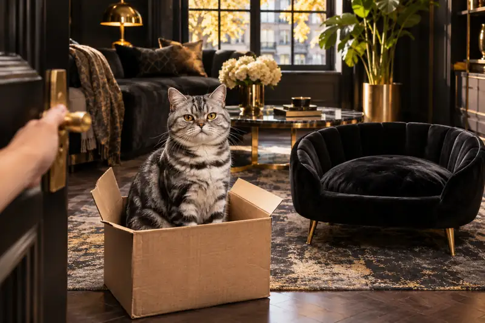

Ja żyję luksusowo.
Człowiek ogarnia.
Hej, kochani. Witajcie w moim świecie. Mam miękkie futro, wysokie standardy i osobistego niewolnika z otwieraczem do puszek. On myśli, że to jego blog. Pozwólmy mu pomarzyć.
Zajrzyj do mojego życia ↓Kocie zwyczaje. Luksusowe drzemki. Człowiek w trakcie szkolenia.
Rozgość się.
Tylko nie na moim fotelu.
Dzień z życia kociego influencera. Mój niewolnik też występuje.
Ja robię zasięgi. On otwiera saszetki. Zobacz, jak wygląda luksusowe życie na koszt mojego człowieka.
Czytaj moją relację →Moja wieczorna rutyna: ugniatanie łapkami i człowiek bez prawa do ruchu
Kocyk premium, podgrzewane kolana i obsługa na wyłączność. Wyjaśniam, dlaczego ugniatam — i skąd te pazurki.
Czytaj moją relację →
Głaskanie w wersji VIP. Dlaczego kot gryzie, gdy obsługa się zapędzi?
Przyszedłem na dwa głaski. Człowiek wykupił mi cały turnus. Opowiem Ci, kiedy kończy się moje spa.
Czytaj moją relację →
Mój nowy apartament. Jak przygotować dom dla kota o wysokich standardach?
Drogie legowisko? Jest. Karton po nim? Jeszcze lepszy. Zapraszam na oprowadzanie i audyt mojego nowego domu.
Czytaj moją relację →Cześć. Jestem powodem,
dla którego on nie może wstać.
Prowadzę luksusowe życie i dokumentuję je tutaj. Mój człowiek obsługuje aparat, miski i drzwi. Ja zajmuję się wizerunkiem. Jak widzisz, podział pracy jest sprawiedliwy.
Pokażę Ci moją rutynę, oprowadzę po apartamencie i zdradzę, dlaczego czasem ugniatam kolana albo kończę głaskanie przed czasem. Będzie zabawnie, ale z każdego poradnika wyniesiesz też coś, co pomoże Ci lepiej rozumieć własnego kota.
Koci influencer jest literacką postacią, jego luksusowe przygody są fikcją, a zdjęcia powstały z AI. Wskazówki dotyczące opieki mają źródła pod artykułami. Sprawy zdrowotne omawiaj z lekarzem weterynarii.